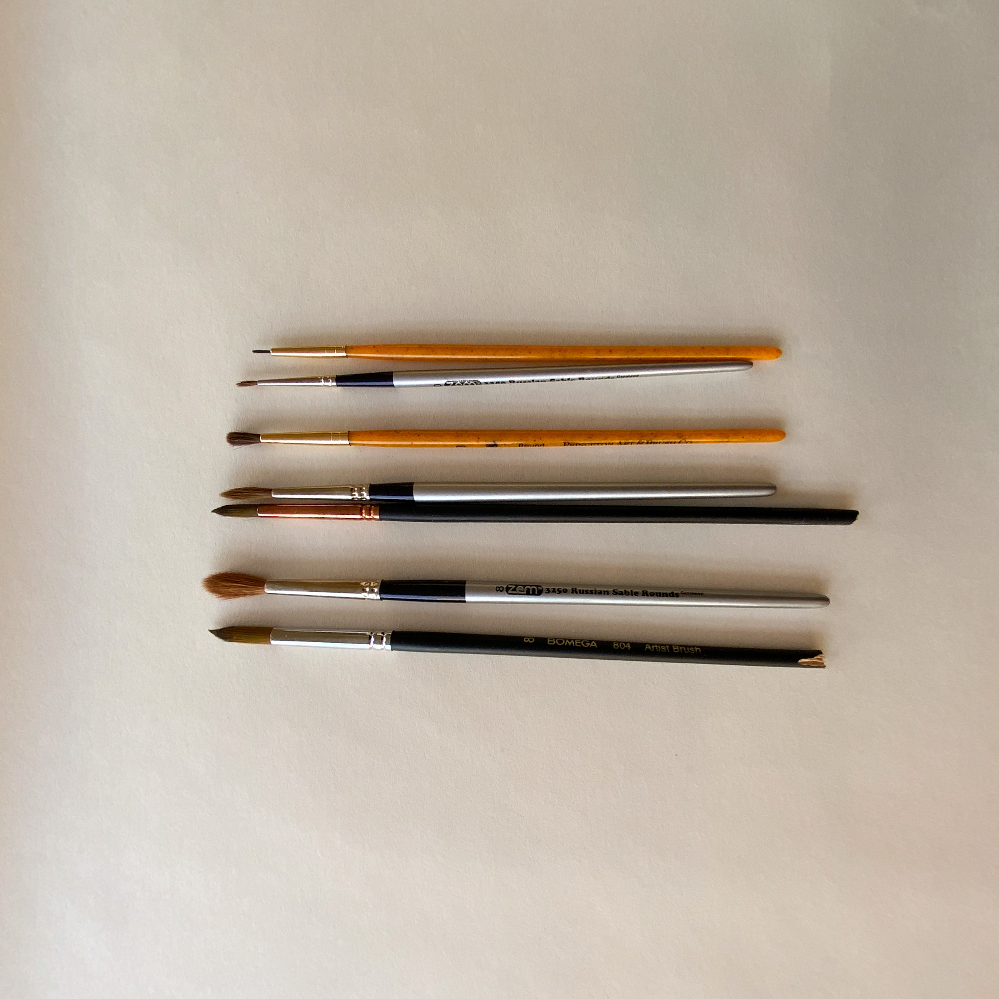
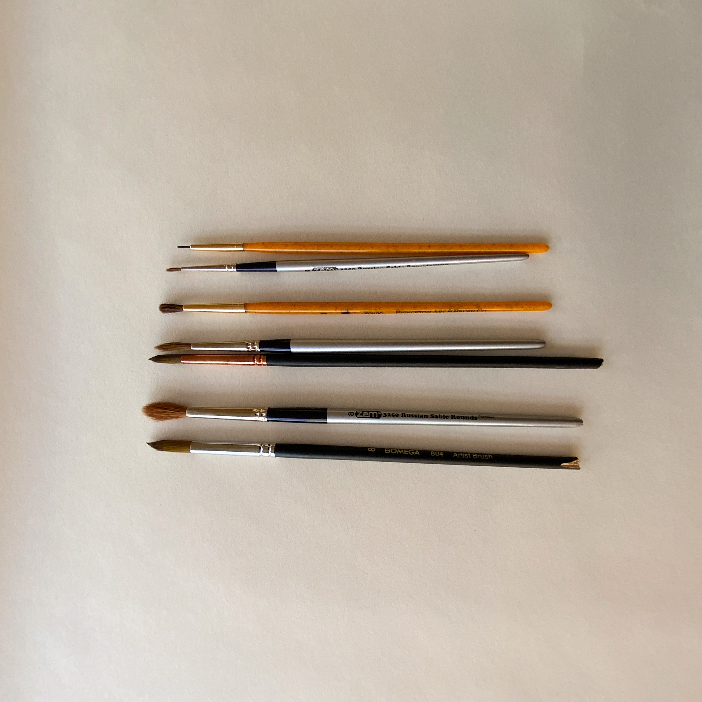
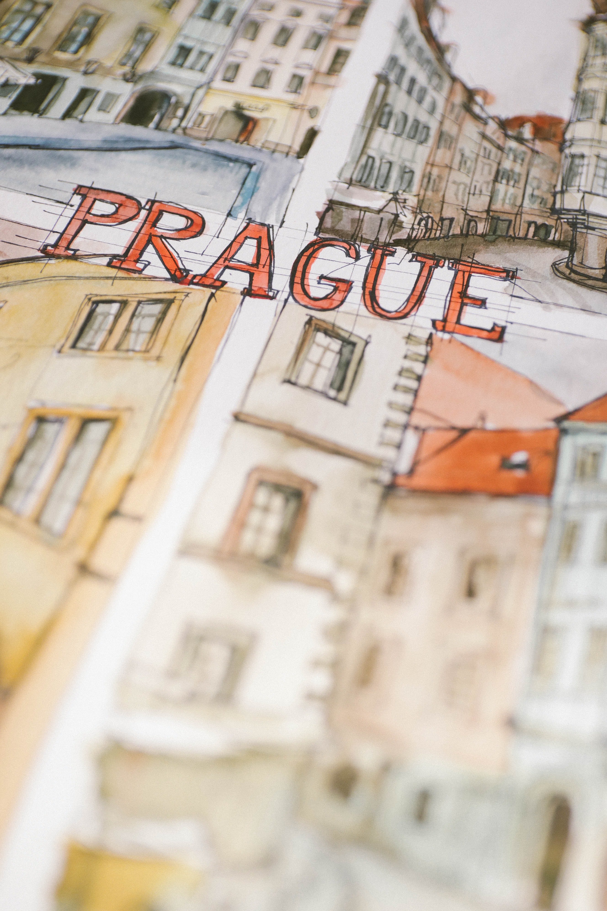
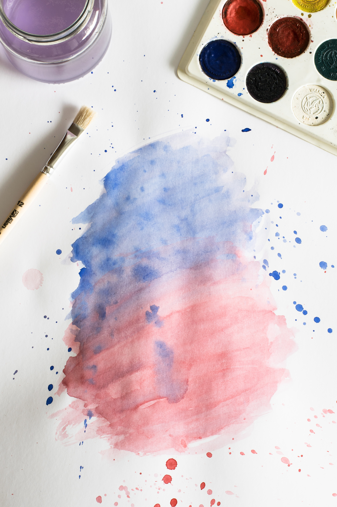
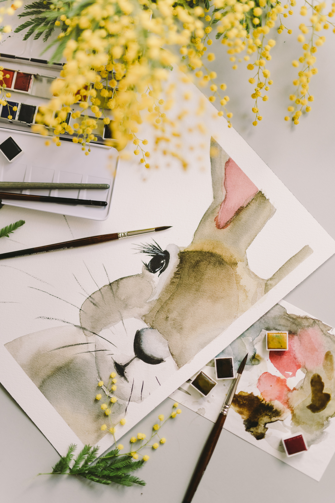

Intro
I discovered watercolor painting in the beginning of the pandemic. It is a relaxing pastime. I especially enjoy painting still life, flowers, and plants. Painting with watercolor exercises your creativity muscles. You also learn other material and skills along the way. I learned about color theory and troubleshooting when there is no undo button through watercolors. Lastly, it is satisfying finishing a piece, big or small!


Getting Started
You will need a few items to get started:
- Paint. There are so many to choose from! The Sennelier Petite Acquerelle Watercolor Paint has a wide range of colors and amazing color payoff. It also comes with a built-in palette for mixing colors.
- Paper. Any unlined paper will work, but there is specific paper for watercolor available. They come in different textures and weights. The Canson XL Mix Media Notebook, for example, is heavier to prevent warping. Also, have scratch paper in handy for quick paint swatches before committing the colors to your final piece.
- Paintbrushes. These come in different materials, from synthetic to the expensive and highly coveted sable hair. They also come in different sizes. The Princeton & Co. Synthetic Brush Set has a good variety of sizes and soft bristles that helps paint glide smoothly.
- Two cups for water. One for cleaning your brushes between colors and the other for starting a new color. This is the perfect time to repurpose old candle jars.
- Rags. For wiping your brushes. Essential if you get too much water on the brush.
- Pencil and eraser. For ligthly sketching your idea before painting. This is optional, but highly recommended, especially for intricate work.
- Easel. This is not necessary to get your painting journey started, but it is nice to have for ergonomics, especially when working on larger pieces.
 


Now that you're all set up, let's begin painting!
- Lightly sketch your idea onto the paper (optional).
- Dip brush lightly into clean water cup.
- Swipe the brush into color of choice. It is helpful to pick up color by either doing small circular motions or rapid swiping motions with the brush.
- Swatch it on your scratch paper (optional). This gives you an opportunity to check the color. If you want less pigment, wipe excess onto the rag and/or dip the brush lightly into the water to dilute the color. If you want more pigment, repeat step 2.
- Paint away! Once you are happy with the color on your brush, it's time to swipe the brush onto your work paper. It is best to start with a light hand; you can always add more paint later on.
- To switch to a new color: dip your brush into the dirty water cup. Ensure that the brush is touching the bottom of the cup. Swirl the brush in figure eight motions to thoroughly rinse the bristles. Dab brush on the rag and do a few swatches on your scratch paper until no more color remains.
- Repeat steps 2 through 5 with the new color.

Conclusion
When it comes to painting with watercolor, the possibilities are endless. Inspiration is everywhere! It's a fun, meditative activity for any age. See the Appendix for more resources.
  Appendix
Here are the links I referenced above:
- Sennelier Petite Acquerelle Watercolor Paint
- Canson XL Mix Media Notebook
- Princeton & Co. Synthetic Brush Set
- How to repurpose candle jars
Here are links to resources that inspired me and helped me get started:
- The Joy of Watercolor: 40 Happy Lessons for Painting the World Around You by Emma Block
- Watercolor Tutorials by Shayda Campbell
- Watercolor Masterclass by Farah Bidin
- Paintings of London Shop Facades by Phil Maltz
- Paintings of Filipino Trees, Plants, and Flowers by Cynthia Bauzon-Arre
Here are links to the images that I used, but did not take myself:
- Olya Kobruseva
Photo of watercolor rabbit by Olya Kobruseva from Pexels
Kobruseva's Instagram @leeloothefirst - Andrea Chiser
Photo of a watercolor brown concrete building by Andreea Ch from Pexels
Chiser's Instagram @lutfain.andrea.chiser - Lum3n
Photo of abstract watercolor pink and blue gradient by Lum3n from Pexels
Lum3n's Instagram @elum3a